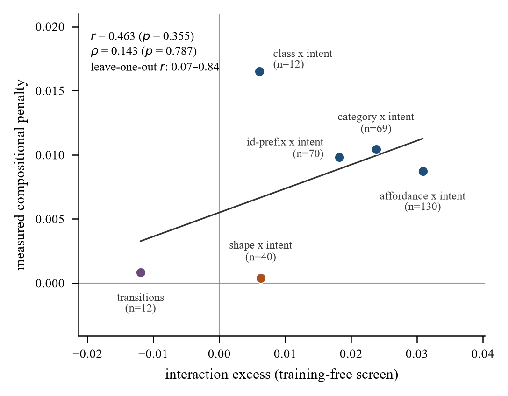
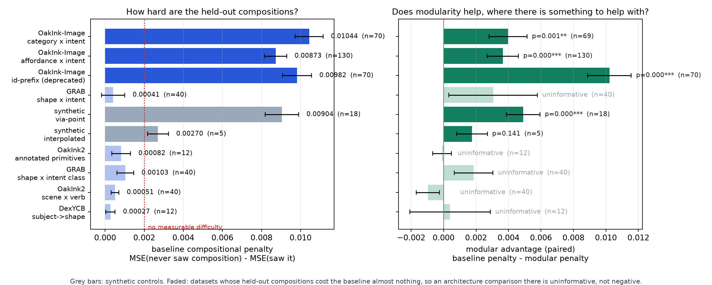
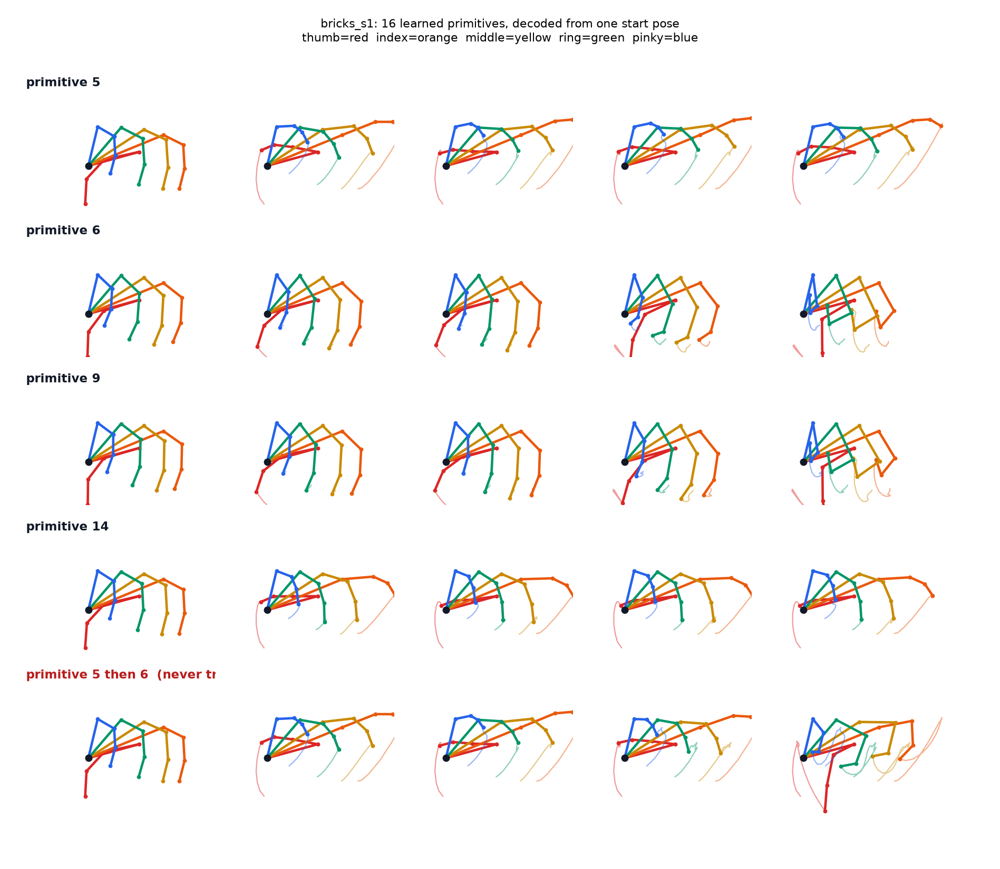
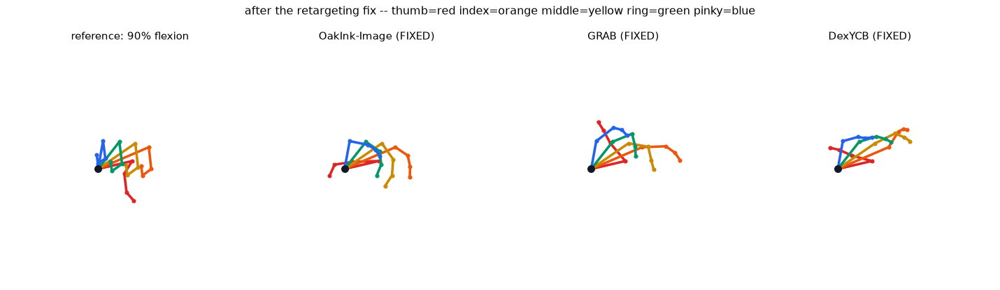
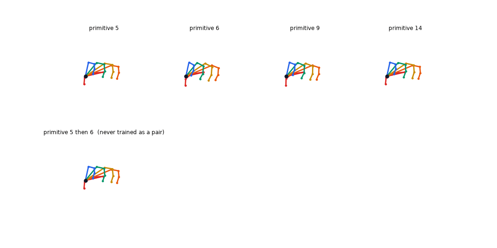

Submitted to IEEE RA-L · 2026 · sole author
Modular motion priors rest on a premise that is almost never measured. This is the measurement — and the control that took the headline back.
Mu-Hua Wang · National Yang Ming Chiao Tung University
Submitted to IEEE Robotics and Automation Letters, September 2026. This is the manuscript as submitted; it has not been reviewed, and it is not posted to a preprint server. The code, the gate outputs as they came out, and every seed of every sweep reported here are in the linked repository.
A modular motion prior emits one primitive selection per frame. A bank of reusable primitives is supposed to recombine: a model that never saw a particular pairing of factors should still handle it. That whole family of models rests on this premise, and the premise is almost never measured.
An axis is a pairing of two factors — object category crossed with intent, say. The measurement is a paired split: the same target trajectories are scored under two priors differing only in whether their training data contained the target's composition. The gap is the compositional penalty.
Six axes over three public hand datasets, behind five gates. Four of the five gates exist because an earlier design returned plausible numbers it could not have earned — one gate per way I had been fooled. The paper recommends the gates more than it recommends the result.

Every axis with a measurable penalty lies right of zero and none lies left of it. The vertical scatter inside the right-hand group is what the statistic does not predict.

Difficulty and advantage, axis by axis. Faded rows are the axes that carry no measurable compositional difficulty.
| Dataset, axis | Interaction excess (z) | Difficulty | Modular advantage | n | p |
|---|---|---|---|---|---|
| OakInk-Image, affordance × intent | +0.0309 (14.9) | +0.00873 | +0.00365 | 130 | 0.0002 |
| OakInk-Image, category × intent confirmatory | +0.0238 (8.3) | +0.01042 | +0.00397 | 69 | 0.0012 |
| OakInk-Image, class × intent | +0.0061 (4.1) | +0.01650 | +0.00873 | 12 | 0.046 |
| GRAB, shape × fine intent | +0.0063 (3.9) | +0.00041 | +0.00305 | 40 | 0.269 |
| OakInk2, annotated transitions | −0.0120 (−2.6) | +0.00082 | −0.00010 | 12 | 0.860 |
| synthetic, via-point positive control | — | +0.00904 | +0.00491 | 18 | 0.0002 |
Budget 256. A sixth axis, OakInk-Image id-prefix × intent, is deprecated and omitted: it keys on the first character of an object id, which records which sub-collection the object came from, not what it is.
A cheap statistic finds the interaction without training anything, in minutes on raw pose data. The paper reports its own ranking failure.
Swept before the statistic chose one — and already not significant, p = 0.073.
Swept anyway. It came back the hardest measured, +0.01650.
p = 0.355. The screen diagnoses whether, not how much.

Four of the sixteen primitives in one bank, each decoded from the same start pose and shown at five points through its window. The last row is one primitive followed by another, a pairing the bank never saw in training.
Between-primitive over within-primitive variance in what a primitive produces; above 1 means the output is determined more by which primitive it is than by what preceded it.
| Pooled over 13 runs | 1.841 ± 0.69211 of 13 above 1 · t = 4.38, p = 0.0009 |
| Replicates on the dataset carrying the difficulty | 1.848four banks, all four above 1 · t = 5.07, p = 0.015 |
Read this as a target that was met, not as a discovery. The training objective optimises exactly this quantity.
Two of the five still fail. They are reported here as they are reported in the paper.
| Gate | What it catches | Status |
|---|---|---|
| Informed coverage | Held-out compositions absent from the informed set pin the penalty at zero by construction | exits 1on three axes; failing rows and an exclusion analysis are reported |
| Composition leak | 48–69 % of targets once had their exact composition in the informed training set, against 0 % for naive | passesnow 0.0 % on both arms across all 70 seeds |
| DOF health | An assumed abduction axis pinned a joint at its limit in 100 % of frames on two datasets | still exits 1at 40 % and 33 % against its own 25 % threshold |
| Primitive collapse | A “modular” model that is monolithic in disguise | passesminimum 9.732 of 12; 16 models below 11.0, all from one sweep |
| Split balance | The risk that an unpaired design measures set difficulty | passes on the mean+1.4 %; the per-seed spread it does not test is −6.1 % to +10.7 % |
Real motion, a seen composition, and an unseen one, on a Shadow Hand. This is what “fails to separate” looks like.
Sixteen of seventeen defined comparisons on a Shadow Hand fail to separate novel compositions from familiar ones, and the seventeenth runs backwards.

The same reference pose projected from each dataset after the axis conventions are inferred per joint rather than assumed.
Direct retargeting of the first 40 trajectories per dataset interpenetrates in 24.6 %, 76.8 % and 59.0 % of frames on OakInk-Image, DexYCB and GRAB. The abduction correction resolves 92 %, 97 % and 64 % of that, leaving 2.1 %, 2.1 % and 21.2 %.
GRAB is the residual case: the correction adjusts finger spacing and cannot increase joint travel, which is what GRAB lacks.
This section is not a footnote. The paper's own negative control removed its strongest result, and the withdrawal is the most distinctive thing in the work.
The two arms differ elevenfold in realized per-frame information. I re-swept with the baseline's rate raised to match. On the raw penalty that removes most of the advantage. On a scale-normalized penalty it appears to remove nothing — and then my own negative control disposes of it.
| Contrast | Normalized advantage | Wins | Sign test p |
|---|---|---|---|
| Real data, rate-matched arm | +0.111 | 52/70 | <0.0001 |
pc_easy control — true advantage zero by construction |
+0.099 | 18/20 | 0.0004 |
| Real data, unmatched arm | +0.104 | 46/70 | 0.012 |
pc_easy control, unmatched arm | +0.018 | 12/20 | not significant |
On a bundle whose compositional penalty is zero by construction, the normalized metric returns 90 % of the headline figure and clears both declared tests. On a real axis with no measurable difficulty it returns more still.
Mechanism: normalization divides by each arm's own reconstruction error. On the control the matched baseline reconstructs 4.04× better than the modular arm, against 1.41× on real data, so dividing inverts the confound instead of removing it.
So the paper states: we claim no modular advantage at matched rate. The normalized metric is reported as a robustness check that failed.
Survives: where difficulty exists, a modular bank pays a smaller compositional penalty than a parameter-matched monolithic latent.
Does not survive: attributing that to modular structure rather than to channel bandwidth.
| Sweep | Baseline | Modular | Ratio |
|---|---|---|---|
| Confirmatory axis | 0.207 | 2.275 | 11.0× |
| Positive control | 0.223 | 2.399 | 10.8× |
| Negative control | 0.230 | 2.424 | 10.6× |
Realized per-frame information rate.
The task-level question was never answered. Sampling both priors unconditionally gives the architectures no channel through which to differ on grasp retention. The experiment that would answer it — each prior as the action space for a policy trying to grasp — was not run.
No dataset design rule. Every axis returning a penalty belongs to one dataset, and across eleven screened axes no collection property I measured predicts which.
Four grasps side by side.
Random poses against generated ones.

The primitive library, animated.